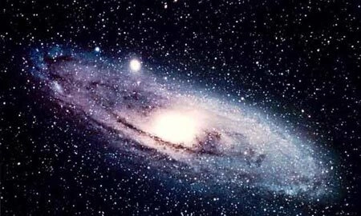

KHÁM PHÁ CÁ NHÂN
FUN FACT VỀ VŨ TRỤ

Mùi của Dải Ngân Hà: Trung tâm của Dải Ngân Hà chứa một lượng lớn đám mây bụi và khí ethyl formate — đây là hợp chất hóa học tạo ra mùi thơm của mâm xôi và vị của rượu rum.
Khối lượng của Sao Thổ: Sao Thổ là hành tinh có mật độ vật chất rất thấp (chủ yếu là khí), nhẹ hơn cả nước; nếu bạn tìm được một chiếc bồn tắm đủ lớn, hành tinh này sẽ nổi lên trên mặt nước.
Không gian hoàn toàn im lặng: Vì không gian là chân không (không có không khí), âm thanh không có môi trường để truyền đi. Các phi hành gia phải dùng sóng vô tuyến để nói chuyện dù đứng cạnh nhau.